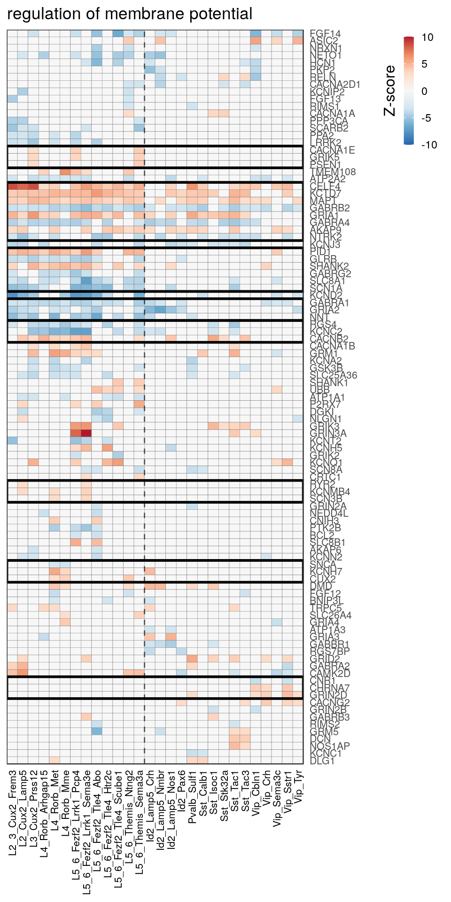
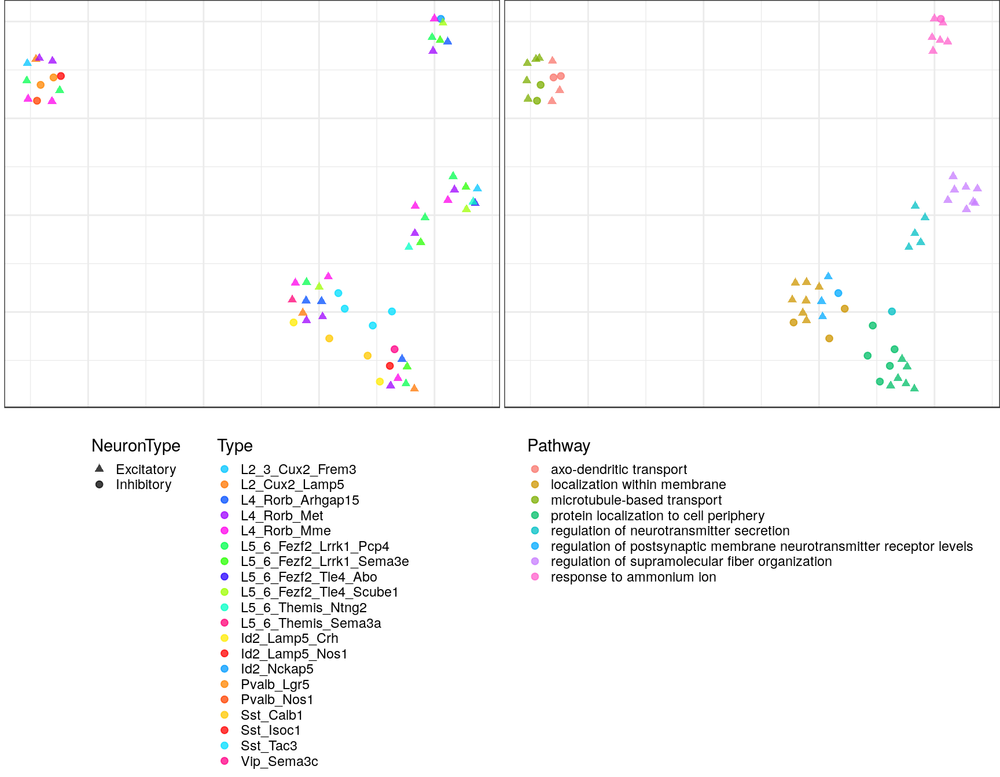

Figures with gene pathways
08 July, 2020
Last updated: 2020-07-08
Checks: 7 0
Knit directory: Epilepsy19/
This reproducible R Markdown analysis was created with workflowr (version 1.6.1). The Checks tab describes the reproducibility checks that were applied when the results were created. The Past versions tab lists the development history.
Great! Since the R Markdown file has been committed to the Git repository, you know the exact version of the code that produced these results.
Great job! The global environment was empty. Objects defined in the global environment can affect the analysis in your R Markdown file in unknown ways. For reproduciblity it’s best to always run the code in an empty environment.
The command set.seed(20200706) was run prior to running the code in the R Markdown file. Setting a seed ensures that any results that rely on randomness, e.g. subsampling or permutations, are reproducible.
Great job! Recording the operating system, R version, and package versions is critical for reproducibility.
Nice! There were no cached chunks for this analysis, so you can be confident that you successfully produced the results during this run.
Great job! Using relative paths to the files within your workflowr project makes it easier to run your code on other machines.
Great! You are using Git for version control. Tracking code development and connecting the code version to the results is critical for reproducibility.
The results in this page were generated with repository version 856ddcf. See the Past versions tab to see a history of the changes made to the R Markdown and HTML files.
Note that you need to be careful to ensure that all relevant files for the analysis have been committed to Git prior to generating the results (you can use wflow_publish or wflow_git_commit). workflowr only checks the R Markdown file, but you know if there are other scripts or data files that it depends on. Below is the status of the Git repository when the results were generated:
Ignored files:
Ignored: .Rhistory
Ignored: .Rproj.user/
Ignored: analysis/fig_go.nb.html
Ignored: analysis/fig_neun.nb.html
Ignored: analysis/fig_overview.nb.html
Ignored: analysis/fig_smart_seq.nb.html
Ignored: analysis/fig_summary.nb.html
Ignored: analysis/fig_type_distance.nb.html
Ignored: analysis/gene_testing.nb.html
Ignored: analysis/prep_alignment.nb.html
Ignored: cache/con_allen.rds
Ignored: cache/con_filt_cells.rds
Ignored: cache/con_filt_samples.rds
Ignored: cache/con_ss.rds
Ignored: cache/count_matrices.rds
Ignored: cache/p2s/
Ignored: output/
Untracked files:
Untracked: DESCRIPTION
Untracked: NAMESPACE
Untracked: R/
Untracked: analysis/prep_alignment.Rmd
Untracked: analysis/prep_filtration.Rmd
Untracked: analysis/site_libs/
Untracked: code/
Untracked: gene_modules/
Untracked: man/
Untracked: metadata/
Unstaged changes:
Modified: Epilepsy19.Rproj
Modified: README.md
Modified: analysis/index.Rmd
Note that any generated files, e.g. HTML, png, CSS, etc., are not included in this status report because it is ok for generated content to have uncommitted changes.
These are the previous versions of the repository in which changes were made to the R Markdown (analysis/fig_go.Rmd) and HTML (docs/fig_go.html) files. If you’ve configured a remote Git repository (see ?wflow_git_remote), click on the hyperlinks in the table below to view the files as they were in that past version.
| File | Version | Author | Date | Message |
|---|---|---|---|---|
| Rmd | 5c8e634 | viktor_petukhov | 2020-07-08 | Fixed dates in fig_ notebooks |
| Rmd | f39566c | viktor_petukhov | 2020-07-07 | Fixed fig_go |
| Rmd | 6452bfa | viktor_petukhov | 2020-07-06 | GO notebook |
library(pagoda2)
library(conos)
library(parallel)
library(magrittr)
library(ggplot2)
library(pbapply)
library(tibble)
library(dplyr)
library(ggrastr)
library(cowplot)
library(ggbeeswarm)
library(readr)
library(pheatmap)
library(reshape2)
library(clusterProfiler)
library(DOSE)
library(org.Hs.eg.db)
library(enrichplot)
devtools::load_all()
theme_set(theme_bw())
outPath <- function(...) OutputPath("fig_go", ...)
div_fill_scale <- scale_fill_brewer(palette="Set2")
div_color_scale <- scale_color_brewer(palette="Set2")
kNtColors <- c(Inhibitory="#1b9e77", Excitatory="#d95f02")Prepare data
con <- read_rds(CachePath("con_filt_samples.rds"))
cm_merged <- con$getJointCountMatrix() %>% Matrix::t()
cm_merged_raw <- con$getJointCountMatrix(raw=T) %>% Matrix::t()
annotation_by_level <- MetadataPath("annotation.csv") %>% read_csv() %>%
filter(cell %in% colnames(cm_merged))
annotation <- annotation_by_level %$% setNames(l4, cell) %>% as.factor()
sample_per_cell <- con$getDatasetPerCell()
neuron_type_per_type <- ifelse(grepl("L[2-6].+", unique(annotation)), "Excitatory", "Inhibitory") %>%
setNames(unique(annotation))
condition_per_sample <- ifelse(grepl("E", levels(sample_per_cell)), "epilepsy", "control") %>%
setNames(levels(sample_per_cell))
type_order <- names(neuron_type_per_type)[order(neuron_type_per_type, names(neuron_type_per_type))]con$plotGraph(groups=annotation, size=0.1, shuffle.colors=T, font.size=c(2,4))annot_filt <- as.factor(annotation[names(con$getDatasetPerCell())])
cm_bool <- cm_merged_raw
cm_bool@x <- (cm_merged_raw@x > 1) * 1
cm_collapsed_bool <- conos:::collapseCellsByType(Matrix::t(cm_bool), annot_filt, min.cell.count=0)
expressed_genes_per_type <- (cm_collapsed_bool > as.vector(table(annot_filt)[rownames(cm_collapsed_bool)] * 0.05)) %>%
apply(1, function(row) names(which(row)))
gene_id_per_name <- bitr(rownames(cm_merged_raw), 'SYMBOL', 'ENTREZID', org.Hs.eg.db) %$%
setNames(ENTREZID, SYMBOL)'select()' returned 1:many mapping between keys and columnsWarning in bitr(rownames(cm_merged_raw), "SYMBOL", "ENTREZID", org.Hs.eg.db):
35.52% of input gene IDs are fail to map...measured_universe <- gene_id_per_name[rownames(cm_bool)] %>% .[!is.na(.)]sample_groups <- split(names(condition_per_sample), condition_per_sample)
de <- getPerCellTypeDE(con, groups=annotation, sample.groups=sample_groups,
ref.level="control", n.cores=40, min.cell.count=3) %>% lapply(`[[`, "res")
de_filtered <- lapply(de, function(df) df[!is.na(df$stat) & (abs(df$stat) > 3),])
de_genes_filt <- mapply(intersect, lapply(de_filtered, rownames), expressed_genes_per_type[names(de_filtered)])
de_gene_ids <- lapply(de_genes_filt, function(gs) gene_id_per_name[gs] %>% .[!is.na(.)])de_all <- names(de_filtered) %>% lapply(function(n)
cbind(Type=n, de_filtered[[n]], lowExpession=!(rownames(de_filtered[[n]]) %in% expressed_genes_per_type[[n]]))) %>%
lapply(as_tibble, rownames="Gene") %>% bind_rows()
write_csv(de_all, outPath("de_all.csv"))Volcano plots
gg_volcanos <- de %>% split(neuron_type_per_type[names(.)]) %>% lapply(function(des) {
lapply(des, function(de) de %>% EnhancedVolcano::EnhancedVolcano(
lab=rownames(.), x = 'log2FoldChange', y = 'padj', legendPosition="none",
pCutoff=5e-2, FCcutoff=1.5, labSize=2, title=NULL, subtitle=NULL, caption=NULL,
axisLabSize=10, pointSize=0.5, xlab=NULL, ylab=NULL, xlim=c(-5, 6.5),
raster=T, raster.width=8/3, raster.height=ifelse(length(des) > 15, 10/8, 10/5), raster.dpi=150
) +
scale_y_continuous(limits=c(0, -log10(max(de$padj))), expand=c(0, 0.1)) +
theme(plot.margin=margin(), axis.ticks.length=unit(0.1, "pt"))
) %>% cowplot::plot_grid(plotlist=., ncol=3, labels=paste0(names(des), "\n", sapply(des, nrow), " genes"),
label_x=0.14, label_y=0.99, label_size=6, align="hv", axis="lrtb", hjust=0) %>%
`+`(theme(plot.margin=margin(b=12, l=12))) %>%
`+`(draw_label("Log2(Fold Change)", size=12, y=-0.01, angle = 0)) %>%
`+`(draw_label("-Log10(P-adjusted)", size=12, x=-0.01, angle = 90))
})
gg_volcanos$Excitatory
$Inhibitoryggsave(outPath("volcanos_ex.pdf"), gg_volcanos$Excitatory, width=8, height=10)
ggsave(outPath("volcanos_inh.pdf"), gg_volcanos$Inhibitory, width=8, height=10)GWAS and EP genes
expressed_genes <- unlist(expressed_genes_per_type) %>% unique()
gwas_genes <- read_csv(MetadataPath("gwas_genes.csv"))$x %>%
intersect(expressed_genes)
ep_genes <- read_csv(MetadataPath("ep_genes.csv"))$x %>%
intersect(rownames(cm_merged))GWAS genes
gwas_test_res <- fTestPerDe(de_genes_filt, gwas_genes, expressed_genes) %>%
mutate(Type=factor(Type, levels=type_order))
p_gwas <- plotFTestResults(gwas_test_res, neuron_type_per_type, y.max=40, y.lab="Enrichment statistic\nfor GWAS genes") +
div_fill_scale
ggsave(outPath("gwas_enrichment.pdf"), p_gwas, width=7, height=4)
p_gwasgwas_rank_df <- gwas_test_res %$%
tibble(Type=as.character(Type), Stat=stat, Affected=(stat > 1), HighlyAffected=(stat_min > 0.75)) %>%
mutate(Rank=setNames(-Stat, Type) %>% split(neuron_type_per_type[Type]) %>% lapply(rank) %>% Reduce(c, .) %>% .[Type],
StatType="GWAS")gwas_hits_lst <- lapply(de_filtered, function(x) sort(intersect(rownames(x), gwas_genes)))
gwas_hits <- tibble(Type=factor(names(gwas_hits_lst), levels=type_order),
NHits=sapply(gwas_hits_lst, length),
Hits=sapply(gwas_hits_lst, paste, collapse=",")) %>%
arrange(Type)
write_csv(gwas_hits, outPath("gwas_hits.csv"))
gwas_hits| Type | NHits | Hits |
|---|---|---|
| L2_3_Cux2_Frem3 | 5 | ATXN1,GABRA2,SCN1A,STAT4,TTC21B |
| L2_Cux2_Lamp5 | 8 | ATXN1,BCL11A,FANCL,GABRA2,KCNN2,SCN1A,STAT4,ZEB2 |
| L3_Cux2_Prss12 | 4 | GRIK1,KCNN2,SCN1A,TTC21B |
| L4_Rorb_Arhgap15 | 1 | SCN1A |
| L4_Rorb_Met | 1 | KCNN2 |
| L4_Rorb_Mme | 1 | TTC21B |
| L5_6_Fezf2_Lrrk1_Pcp4 | 3 | SCN1A,STAT4,TTC21B |
| L5_6_Fezf2_Lrrk1_Sema3e | 2 | KCNAB1,SCN1A |
| L5_6_Fezf2_Tle4_Abo | 4 | KCNAB1,KCNN2,SCN1A,STAT4 |
| L5_6_Fezf2_Tle4_Htr2c | 3 | PCDH7,SCN1A,STAT4 |
| L5_6_Fezf2_Tle4_Scube1 | 2 | KCNAB1,SCN1A |
| L5_6_Themis_Ntng2 | 2 | BCL11A,SCN1A |
| L5_6_Themis_Sema3a | 4 | ATXN1,SCN1A,STAT4,TTC21B |
| Id2_Lamp5_Crh | 3 | GABRA2,PCDH7,ZEB2 |
| Id2_Lamp5_Nmbr | 0 | |
| Id2_Lamp5_Nos1 | 1 | SCN1A |
| Id2_Nckap5 | 1 | ZEB2 |
| Id2_Pax6 | 0 | |
| Pvalb_Crh | 0 | |
| Pvalb_Lgr5 | 0 | |
| Pvalb_Nos1 | 2 | GABRA2,SCN3A |
| Pvalb_Sulf1 | 3 | GABRA2,GRIK1,SCN3A |
| Sst_Calb1 | 3 | FANCL,GRIK1,KCNN2 |
| Sst_Isoc1 | 2 | GRIK1,KCNAB1 |
| Sst_Nos1 | 2 | SCN1A,TTC21B |
| Sst_Stk32a | 0 | |
| Sst_Tac1 | 2 | KCNAB1,SCN1A |
| Sst_Tac3 | 0 | |
| Sst_Th | 0 | |
| Vip_Abi3bp | 0 | |
| Vip_Cbln1 | 3 | BCL11A,GRIK1,PCDH7 |
| Vip_Crh | 1 | KCNN2 |
| Vip_Nrg1 | 3 | GABRA2,GRIK1,SCN1A |
| Vip_Sema3c | 1 | SCN2A |
| Vip_Sstr1 | 1 | GABRA2 |
| Vip_Tyr | 0 |
EP genes
ep_test_res <- fTestPerDe(de_genes_filt, ep_genes, expressed_genes) %>%
mutate(Type=factor(Type, levels=type_order))
p_ep_genes <- plotFTestResults(ep_test_res, neuron_type_per_type, y.max=15, y.lab="Enrichment statistic\nfor epilepsy-related genes") +
div_fill_scale
ggsave(outPath("epilepsy_enrichment.pdf"), p_ep_genes, width=7, height=4)
p_ep_genes
ep_enrich_rank_df <- ep_test_res %$%
tibble(Type=as.character(Type), Stat=stat, Affected=(stat > 1), HighlyAffected=(stat_min > 0.75)) %>%
mutate(Rank=setNames(-Stat, Type) %>% split(neuron_type_per_type[Type]) %>% lapply(rank) %>% Reduce(c, .) %>% .[Type],
StatType="EPEnrichment")ep_hits_lst <- lapply(de_filtered, function(x) sort(intersect(rownames(x), ep_genes)))
ep_hits <- tibble(Type=factor(names(ep_hits_lst), levels=type_order),
NHits=sapply(ep_hits_lst, length),
Hits=sapply(ep_hits_lst, paste,collapse=",")) %>%
arrange(Type)
write_csv(ep_hits, outPath("ep_hits.csv"))
ep_hits| Type | NHits | Hits |
|---|---|---|
| L2_3_Cux2_Frem3 | 11 | ALG13,CNTNAP2,DCX,GABRA1,KCND2,NPY,PCSK1,PLCB1,PNKP,SCN1A,WWOX |
| L2_Cux2_Lamp5 | 13 | ALG13,CNTNAP2,DCX,GABRA1,KCND2,NLGN1,NPY,NRG1,PCSK1,PLCB1,PNKP,SCN1A,VRK2 |
| L3_Cux2_Prss12 | 12 | ALG13,DCX,GABRA1,IQSEC2,KCND2,NPY,PCSK1,PLCB1,PNKP,PVALB,SCN1A,SV2C |
| L4_Rorb_Arhgap15 | 7 | ALG13,GABRA1,NEDD4L,PCSK1,PLCB1,PNKP,SCN1A |
| L4_Rorb_Met | 10 | ALG13,DCX,GABRA1,IQSEC2,NPY,PCSK1,PLCB1,PNKP,SNAP25,SV2C |
| L4_Rorb_Mme | 9 | ALG13,GABRA1,IL1RAPL1,IQSEC2,KCND2,PCSK1,PLCB1,PNKP,SNAP25 |
| L5_6_Fezf2_Lrrk1_Pcp4 | 9 | ALG13,GABRA1,KCND2,LGI1,NPY,PCSK1,PLCB1,PNKP,SCN1A |
| L5_6_Fezf2_Lrrk1_Sema3e | 10 | ALG13,CCDC88A,GABRA1,GABRB3,KCND2,PCSK1,PLCB1,PNKP,SCN1A,SNAP25 |
| L5_6_Fezf2_Tle4_Abo | 15 | ALG13,AUTS2,CCDC88A,ERBB4,GABRA1,KCND2,NEDD4L,NLGN1,NPY,NRG1,NRG3,PCSK1,PLCB1,PNKP,SCN1A |
| L5_6_Fezf2_Tle4_Htr2c | 7 | FLNA,GABRA1,KCND2,NLGN1,NPY,PCSK1,SCN1A |
| L5_6_Fezf2_Tle4_Scube1 | 7 | ERBB4,GABRA1,HNRNPH1,PCSK1,PLCB1,PNKP,SCN1A |
| L5_6_Themis_Ntng2 | 9 | CACNA1A,CNTNAP2,HSF1,LGI1,NRG1,PCSK1,PLCB1,PNKP,SCN1A |
| L5_6_Themis_Sema3a | 9 | ALG13,GABRA1,IL1RAPL1,KCND2,NRG1,PCSK1,PLCB1,PNKP,SCN1A |
| Id2_Lamp5_Crh | 6 | DLX6,ERBB4,GABRA1,GOLIM4,PNKP,SV2C |
| Id2_Lamp5_Nmbr | 5 | GABRA1,GOLIM4,PNKP,RELN,SV2C |
| Id2_Lamp5_Nos1 | 7 | DLX6,GOLIM4,NPY,PLCB1,PNKP,SCN1A,SV2C |
| Id2_Nckap5 | 2 | GABRA1,PNKP |
| Id2_Pax6 | 3 | GABRA1,PNKP,RELN |
| Pvalb_Crh | 2 | ALG13,GNAO1 |
| Pvalb_Lgr5 | 3 | CACNA1A,CNTNAP2,GABRA1 |
| Pvalb_Nos1 | 6 | ARX,CNTNAP2,GABRA1,NPY,PNKP,PVALB |
| Pvalb_Sulf1 | 5 | ARX,CNTNAP2,NPY,PNKP,PVALB |
| Sst_Calb1 | 6 | ARX,IQSEC2,KCND2,LGI1,PNKP,PVALB |
| Sst_Isoc1 | 4 | CACNA1A,GABRA1,GABRB3,GRIN2B |
| Sst_Nos1 | 7 | ARX,CAMTA1,GABRA1,LGI1,NPY,NRG1,SCN1A |
| Sst_Stk32a | 8 | ALG13,CACNA1A,CAMTA1,CNTNAP2,HNRNPU,IL1RAPL1,NPY,RELN |
| Sst_Tac1 | 7 | ARX,CAMTA1,CNTNAP2,NPY,NRG1,PNKP,SCN1A |
| Sst_Tac3 | 6 | ARX,CNTNAP2,IL1RAPL1,NPY,PNKP,RELN |
| Sst_Th | 2 | ERBB4,GABRA1 |
| Vip_Abi3bp | 0 | |
| Vip_Cbln1 | 4 | DLX1,GRIN2B,RELN,SV2A |
| Vip_Crh | 2 | GABRA1,PNKP |
| Vip_Nrg1 | 7 | GABRA1,LGI1,NPY,NRG1,PLCB1,PNKP,SCN1A |
| Vip_Sema3c | 7 | ARX,DLX1,GABRA1,KCND2,NPY,PNKP,SCN2A |
| Vip_Sstr1 | 2 | GABRA1,PNKP |
| Vip_Tyr | 3 | KCND2,NLGN1,PNKP |
unlist(ep_hits_lst) %>% table().
ALG13 ARX AUTS2 CACNA1A CAMTA1 CCDC88A CNTNAP2 DCX
12 7 1 4 3 2 9 4
DLX1 DLX6 ERBB4 FLNA GABRA1 GABRB3 GNAO1 GOLIM4
2 2 4 1 25 2 1 3
GRIN2B HNRNPH1 HNRNPU HSF1 IL1RAPL1 IQSEC2 KCND2 LGI1
2 1 1 1 4 4 12 5
NEDD4L NLGN1 NPY NRG1 NRG3 PCSK1 PLCB1 PNKP
2 4 16 7 1 13 14 27
PVALB RELN SCN1A SCN2A SNAP25 SV2A SV2C VRK2
4 5 15 1 3 1 5 1
WWOX
1 Disorder Genes
dos <- pblapply(de_gene_ids, enrichDO, ont="DO", readable=T, pAdjustMethod='BH', minGSSize=5, pvalueCutoff=0.99) %>%
lapply(function(x) x@result)
dos %<>% names() %>% setNames(., .) %>% lapply(function(n) mutate(dos[[n]], Type=n))
do_df <- lapply(dos, function(x) filter(x, p.adjust < 0.05)) %>% .[sapply(., nrow) > 0] %>%
bind_rows() %>% dplyr::select(Type, ID, Description, GeneRatio, geneID, pvalue, p.adjust, qvalue)
write_csv(do_df, outPath("disease_ontology_hits.csv"))
head(do_df)| Type | ID | Description | GeneRatio | geneID | pvalue | p.adjust | qvalue |
|---|---|---|---|---|---|---|---|
| Id2_Lamp5_Crh | DOID:1826 | epilepsy syndrome | 13/142 | GRIA2/GRIA3/GABRA1/STXBP1/DLG2/GRIA1/GAD2/SERPINI1/GABBR1/GAD1/HCN1/PRNP/GABRB2 | 0.0000540 | 0.0211087 | 0.0208558 |
| Id2_Lamp5_Crh | DOID:3328 | temporal lobe epilepsy | 6/142 | GRIA2/GRIA3/GRIA1/GABBR1/PRNP/GABRB2 | 0.0002089 | 0.0408477 | 0.0403584 |
| Id2_Lamp5_Nos1 | DOID:3328 | temporal lobe epilepsy | 8/123 | GRIA2/GRIA3/GABBR1/OPRM1/SCN1A/GRIA1/PRNP/GABRB2 | 0.0000007 | 0.0002437 | 0.0002372 |
| Id2_Lamp5_Nos1 | DOID:2234 | focal epilepsy | 8/123 | GRIA2/GRIA3/GABBR1/OPRM1/SCN1A/GRIA1/PRNP/GABRB2 | 0.0000028 | 0.0005270 | 0.0005129 |
| Id2_Lamp5_Nos1 | DOID:1826 | epilepsy syndrome | 11/123 | GRIA2/GRIA3/GABBR1/RCN2/OPRM1/KCTD7/SCN1A/SERPINI1/GRIA1/PRNP/GABRB2 | 0.0002508 | 0.0310194 | 0.0301877 |
| Id2_Pax6 | DOID:1826 | epilepsy syndrome | 9/75 | ADAM22/GRIA2/KCTD7/GAD1/GABRA1/RELN/L2HGDH/GABRB2/STXBP1 | 0.0000991 | 0.0255716 | 0.0247266 |
GO
Autopsy genes:
table_path <- MetadataPath("tissue_signatures_allen.xlsx")
neurosurgery_genes <- openxlsx::read.xlsx(table_path)$gene %>% intersect(rownames(cm_merged))
autopsy_genes <- openxlsx::read.xlsx(table_path, sheet=2)$gene %>% intersect(rownames(cm_merged))
auto_surg_genes <- union(autopsy_genes, neurosurgery_genes)Estimate GO
go_datas <- c("BP", "CC", "MF") %>% setNames(., .) %>%
pblapply(function(n) clusterProfiler:::get_GO_data(org.Hs.eg.db, n, "ENTREZID") %>%
as.list() %>% as.environment()) # otherwise it pass reference to the environment content
# gos <- c("BP", "CC", "MF") %>% setNames(., .) %>% lapply(function(ont)
# pblapply(de_gene_ids, enrichGO, ont=ont, readable=T, pAdjustMethod='BH', OrgDb=org.Hs.eg.db)) %>%
# lapply(lapply, function(x) x@result)
gos <- names(go_datas) %>% setNames(., .) %>% lapply(function(ont)
pblapply(de_gene_ids, enrichGOOpt, ont=ont, goData=go_datas[[ont]], universe=measured_universe,
readable=T, pAdjustMethod='BH', OrgDb=org.Hs.eg.db, cl=45)) %>%
lapply(lapply, function(x) x@result)
gos %<>% lapply(lapply, function(x)
mutate(x, AutopsyFraction=strsplit(geneID, "/") %>%
sapply(function(x) mean(x %in% auto_surg_genes))))gos_filt <- lapply(gos, lapply, function(x) filter(x, p.adjust < 0.05, AutopsyFraction < 0.201))
gos_joint <- lapply(gos_filt, function(gt)
gt %>% .[sapply(., nrow) > 0] %>% names() %>% setNames(., .) %>%
lapply(function(n) cbind(gt[[n]], Type=n)) %>% Reduce(rbind, .))
names(gos_joint) %>% lapply(function(n)
gos_joint[[n]] %>% mutate(GO=n) %>%
dplyr::select(GO, Type, ID, Description, GeneRatio, AutopsyFraction, geneID, pvalue, p.adjust, qvalue)) %>%
bind_rows() %>%
write_csv(outPath("gene_ontology_hits.csv"))# clust_info <- prepareGOHeatmapClustered(gos_joint$BP, type_order)
# clust_info$ggDependencies
library(ggrepel)
plotNCellRegression <- function(n, n.cell.per.type, neuron.type, n.name="N", legend.pos=c(1, 0)) {
p.df <- data.frame(N=n) %>% as_tibble(rownames="Type") %>%
mutate(NCells=as.vector(n.cell.per.type[Type])) %>%
mutate(NeuronType=neuron.type[Type])
ggplot(p.df, aes(x=NCells, y=N)) +
# geom_smooth(aes(color=NeuronType), method=MASS::rlm, se=0) +
geom_point(aes(color=NeuronType)) +
geom_label_repel(aes(label=Type), size=2, min.segment.length=0.1, box.padding=0, label.size=0, max.iter=300, fill=alpha("white", 0.4)) +
scale_x_log10() +
scale_color_manual(values=kNtColors) +
ylim(0, max(p.df$N)) + labs(x="Number of cells", y=n.name) +
theme(legend.position=legend.pos, legend.justification=legend.pos, legend.background=element_rect(fill=alpha("white", 0.4))) +
guides(color=guide_legend(title="Neuron type"))
}n_cell_per_type <- table(annotation)
n_gos_per_type <- sapply(gos_filt, sapply, nrow) %>% rowSums()
n_exp_de_per_type <- sapply(de_genes_filt, length)plot_grid(
n_gos_per_type %>%
plotNCellRegression(n_exp_de_per_type, neuron.type=neuron_type_per_type, n.name="Number of GO Terms") +
geom_smooth(method=MASS::rlm, se=0, color="black", size=0.5) +
scale_x_continuous(name="Number of highly-expressed DE genes"),
sapply(gos_filt, sapply, nrow) %>% rowSums() %>%
plotNCellRegression(n_cell_per_type, neuron.type=neuron_type_per_type, n.name="Number of GO Terms"),
ncol=1, labels=c("a", "b"), label_x=0.01
)ggsave(outPath("n_gos_vs_ns.pdf"), width=7, height=8)sapply(de_filtered, nrow) %>%
plotNCellRegression(n_cell_per_type, neuron.type=neuron_type_per_type, n.name="Number of DE genes") +
scale_y_log10()ggsave(outPath("n_de_vs_n_cells.pdf"), width=7, height=5)
n_exp_de_per_type %>%
plotNCellRegression(n_cell_per_type, neuron.type=neuron_type_per_type, n.name="Number of highly-expressed DE genes") +
geom_smooth(aes(color=NeuronType), method=MASS::rlm, se=0, size=0.5)ggsave(outPath("n_de_expr_vs_n_cells.pdf"), width=7, height=5)
p_df <- sapply(gos_filt, sapply, nrow) %>% as_tibble(rownames="Type") %>%
reshape2::melt(id.vars="Type", variable.name="GO", value.name="N") %>%
mutate(Type=factor(Type, levels=type_order))
gg_n_gos <- ggplot(p_df) +
geom_bar(aes(x=Type, y=N, fill=GO), stat="identity") +
scale_y_continuous(expand=c(0, 0), limits=c(0, 300)) +
theme(axis.text.x=element_text(angle=90, hjust=1, vjust=0.5),
panel.grid.major.x=element_blank(), legend.position=c(1, 1), legend.justification=c(1, 1)) +
labs(x="", y="#Pathways")
gg_n_gosggsave(outPath("n_gos_per_type.pdf"), width=7, height=5)Ranking
n_gos_per_type <- sapply(gos_filt, sapply, nrow) %>% rowSums()
n_exp_de_per_type <- sapply(de_genes_filt, length)
reg_res <- MASS::rlm(n_exp_de_per_type, n_gos_per_type)$residuals
n_go_rank_df <- tibble(Type=names(reg_res), Stat=reg_res, Affected=(reg_res > 0),
HighlyAffected=(reg_res %>% `>`(quantile(.[. > 0], 0.75)))) %>%
mutate(Rank=setNames(-Stat, Type) %>% split(neuron_type_per_type[Type]) %>% lapply(rank) %>% Reduce(c, .) %>% .[Type],
StatType="GONumber")types_per_nt <- split(names(neuron_type_per_type), neuron_type_per_type)
n_de_rank_df <- types_per_nt %>% lapply(function(ns) {
reg.res <- MASS::rlm(log10(n_cell_per_type[ns]), n_exp_de_per_type[ns])$residuals
tibble(Type=names(reg.res), Stat=reg.res, Affected=(reg.res > 0),
HighlyAffected=(reg.res %>% `>`(quantile(.[. > 0], 0.75))),
Rank=rank(-reg.res), StatType="DENumber")
}) %>% Reduce(rbind, .)rbind(ep_enrich_rank_df, gwas_rank_df, n_go_rank_df, n_de_rank_df) %>%
write_csv(OutputPath("total_ranking", "go.csv"))Clustering
clust_df <- clusterIndividualGOs(gos_joint$BP, 0.66) %>%
.[, type_order[type_order %in% colnames(.)]]# plotIndividualClustersPerGO(clust_df, clust_info$order)cl_dists <- pbapply(clust_df, 1, function(ct1) apply(clust_df, 1, function(ct2) {
mask <- !is.na(ct1) & !is.na(ct2)
if (sum(mask) == 0) 1 else (1 - mean(ct1[mask] == ct2[mask]))
}))
cl_clusts <- as.dist(cl_dists) %>% hclust(method="average")
clusts <- cutree(cl_clusts, h=0.5)
# split(names(clusts), clusts)
c(length(clusts), length(unique(clusts)))[1] 446 186plotNumberOfClustersPerHeight(cl_clusts, step=0.01)gos_joint$BP %<>% mutate(GOClust=clusts[Description])
name_per_clust <- gos_joint$BP %>% group_by(GOClust, Description) %>% summarise(pvalue=exp(mean(log(pvalue)))) %>%
split(.$GOClust) %>% sapply(function(df) df$Description[which.min(df$pvalue)])
gos_joint$BP %<>% mutate(GOClustName=name_per_clust[as.character(GOClust)])
go_bp_summ_df <- gos_joint$BP %>% group_by(Type, GOClustName) %>%
summarise(p.adjust=min(p.adjust)) %>% ungroup() %>% rename(Description=GOClustName)
gos_joint$BP %$% split(Description, GOClustName) %>% lapply(unique) %>%
sapply(function(x) paste0("'", x, "'", collapse="; ")) %>%
tibble(Group=names(.), Pathways=.) %>% write_csv(outPath("bp_pathway_clustering.csv"))Overview
Supp. Figure 13:
t_df <- go_bp_summ_df %>% mutate(p.adjust=-log10(p.adjust)) %>%
tidyr::spread(Type, p.adjust) %>% as.data.frame() %>% set_rownames(.$Description) %>% .[, 2:ncol(.)] %>%
.[, type_order[type_order %in% colnames(.)]] %>%
.[rowSums(!is.na(.)) == 1,] %>% .[, colSums(!is.na(.)) > 0]
t_df[is.na(t_df)] <- 0
colored_types <- which(colSums(t_df > 0) >= 5) %>% names()
color_per_type <- rep("black", length(type_order)) %>% setNames(type_order)
color_per_type[colored_types] <- ifelse(neuron_type_per_type[colored_types] == "Excitatory", "red", "green")
plotGOHeatmap(t_df, color_per_type, legend.position=c(2.1, 0.93)) +
gNtVline(neuron_type_per_type)ggsave(outPath("go_pvals_single.pdf"), width=8, height=11)Supp. Figure 9:
color_per_type <- ifelse(neuron_type_per_type == "Excitatory", "red", "green")
clust_info <- prepareGOHeatmapClustered(go_bp_summ_df, type_order, color.per.type=color_per_type,
cut.h=2.5, method="ward.D", min.rows.per.clust=7)
clust_info$ggggsave(outPath("go_pvals_shared.pdf"), width=8, height=11)Figure 3b:
go_per_cl <- clust_info$ann %$%
split(Type, value)[as.character(unique(value[!is.na(value)]))] %>% rev()
rel_heights <- sapply(go_per_cl, length) %>% .[1:(length(.)-1)] %>% c(22)
lapply(1:length(go_per_cl), function(i) {
p.df <- clust_info$df[as.character(go_per_cl[[i]]),]
gg <- plotGOHeatmap(p.df, clust_info$color.per.type, legend.position=c(1.9, 1), row.order=T, legend.title.size=10) +
gNtVline(neuron_type_per_type) +
theme(plot.margin=margin(), legend.key.height=unit(0.2, "in"))
if (i != length(go_per_cl)) {
gg <- gg + theme(axis.text.x=element_blank())
}
if (i != 1) {
gg <- gg + theme(legend.position="none")
}
return(gg)
}) %>%
plot_grid(plotlist=., ncol=1, align="v", rel_heights=rel_heights)ggsave(outPath("f3b_go_pvals_clustered.pdf"), width=8, height=10)top_clust <- clust_info$ann %$% split(as.character(Type), value) %>%
sapply(function(x) sum(go_bp_summ_df$Description %in% x)) %>%
which.max() %>% names()
as.character(go_per_cl[[top_clust]]) [1] "regulation of postsynaptic membrane potential"
[2] "modulation of chemical synaptic transmission"
[3] "regulation of membrane potential"
[4] "regulation of striated muscle contraction"
[5] "axon development"
[6] "synapse assembly"
[7] "synapse organization"
[8] "central nervous system neuron development"
[9] "dendritic spine development"
[10] "positive regulation of developmental growth"
[11] "establishment of synaptic vesicle localization"
[12] "positive regulation of neurogenesis"
[13] "dendrite development"
[14] "regulation of neuron projection development" gpt_mats <- go_per_cl[[top_clust]] %>% as.character() %>% setNames(., .) %>%
lapply(getGenePathwayMatrix, gos_joint$BP, de_filtered)
names(gpt_mats) %>% pblapply(function(gon) {
p.df <- gpt_mats[[gon]] %>% pmax(-10) %>% pmin(10) %>%
t() %>% .[rowSums(abs(.) > 0.1) > 1,]
cl.info <- estimateHeatmapClusters(abs(p.df) > 0.1, cut.h=0.5, min.rows.per.clust=3, distance="binary",
neuron.type.per.type=neuron_type_per_type)
gg <- plotGOHeatmap(p.df, col.order=type_order, legend.title="Z-score", row.order=cl.info$order) +
scale_fill_distiller(palette="RdBu", limits=c(-10, 10)) +
gNtVline(neuron_type_per_type) +
geom_rect(aes(xmin=x1, xmax=x2, ymin=y1 + 0.5, ymax=y2 + 0.5), cl.info$rect, color="black", fill="transparent", size=1) +
ggtitle(gon)
ggsave(outPath("pathway_clustering", paste0(gon, ".pdf")), gg, width=6, height=nrow(p.df) * 0.12 + 2)
gg
})[[1]]
[[2]]
[[3]]
[[4]]
[[5]]
[[6]]
[[7]]
[[8]]
[[9]]
[[10]]
[[11]]
[[12]]
[[13]]
[[14]]Embeddings of pathways
gp_embs <- clust_info$ann %$% split(Type, value) %>% lapply(as.character) %>%
pblapply(embedPathwayTypesUmap, gos_joint$BP, spread=1.5, min_dist=0.2)ggs <- lapply(gp_embs, function(emb) {
plot.df <- as_tibble(emb, rownames="Name") %>%
mutate(Type=sapply(strsplit(Name, "!"), `[`, 2), Pathway=sapply(strsplit(Name, "!"), `[`, 1)) %>%
dplyr::rename(X=V1, Y=V2) %>%
mutate(NeuronType=neuron_type_per_type[Type], Type=factor(Type, levels=type_order))
p.theme <- theme(axis.text=element_blank(), axis.title=element_blank(),
axis.ticks=element_blank(), plot.margin=margin(), legend.justification="top",
legend.key.size=unit(10, "pt"), legend.key=element_blank(),
legend.position="bottom", legend.direction="vertical")
point.size <- 1.75
point.alpha <- 0.75
color.vals <- type_order %>% split(neuron_type_per_type[.]) %>%
lapply(sccore::fac2col) %>% lapply(sample) %>% unlist(use.names=F)
cowplot::plot_grid(
ggplot(plot.df) +
geom_point(aes(x=X, y=Y, color=Type, shape=NeuronType), size=point.size, alpha=point.alpha) +
scale_shape_manual(values=c(17, 19)) +
scale_color_manual(values=color.vals) +
p.theme
,
ggplot(plot.df, aes(x=X, y=Y, shape=NeuronType)) +
geom_point(aes(color=Pathway), size=point.size, alpha=point.alpha) +
scale_shape_manual(values=c(17, 19), guide=F) +
p.theme
, ncol=2, align="h"
)
})Warning: `as_tibble.matrix()` requires a matrix with column names or a `.name_repair` argument. Using compatibility `.name_repair`.
This warning is displayed once per session.for (i in 1:length(ggs)) {
ggsave(outPath("pathway_clustering", paste0("cluster", i, "_umap.pdf")), ggs[[i]], width=9, height=7)
}
ggs$`1`
$`2`
$`3`
$`4`
$`10`
$`11`
$`12`Clustering cell types by GO
p_mat <- estimateTypeSimilarityOverPathways(gos_filt["BP"])
t_cpt <- setNames(kNtColors[neuron_type_per_type], names(neuron_type_per_type))
plotTypeSimilarityOverPathways(p_mat, 1.2, color.per.type=t_cpt, max.val=0.4)ggsave(outPath("type_clustering_by_go.pdf"))AMPA
cm_collapsed <- conos:::collapseCellsByType(Matrix::t(cm_merged), annot_filt, min.cell.count=0)
cm_collapsed_norm <- cm_collapsed / rowSums(cm_collapsed)ampa_info <- getPathwayGeneExpression(de, "AMPA glutamate receptor complex", gos$CC, cm.collapsed=cm_collapsed_norm,
type.order=type_order, neuron.type.per.type=neuron_type_per_type)
glutamate_info <- getPathwayGeneExpression(de, "glutamate receptor signaling pathway", gos$BP, cm.collapsed=cm_collapsed_norm,
type.order=type_order, neuron.type.per.type=neuron_type_per_type)
action_info <- getPathwayGeneExpression(de, "action potential", gos$BP, cm.collapsed=cm_collapsed_norm,
type.order=type_order, neuron.type.per.type=neuron_type_per_type)
ggsave(outPath("gene_scattermaps", "ampa_genes.pdf"), ampa_info$gg, width=8, height=3.5)
ggsave(outPath("gene_scattermaps", "glutamate_genes.pdf"), glutamate_info$gg, width=8, height=7)
ggsave(outPath("gene_scattermaps", "action_genes.pdf"), action_info$gg, width=8, height=6)Warning: Removed 1 rows containing missing values (geom_point).p_theme_base <- theme(plot.margin=margin(), axis.text.y=element_text(size=7))
cowplot::plot_grid(
ampa_info$gg + theme(legend.position="none", axis.text.x=element_blank(), axis.ticks.x=element_blank()) + p_theme_base,
glutamate_info$gg + theme(axis.text.x=element_blank(), axis.ticks.x=element_blank()) + p_theme_base,
action_info$gg + theme(legend.position="none") + p_theme_base,
ncol=1, align="v", axis="rl", rel_heights=c(0.6, 1.7, 2)
)Warning: Removed 1 rows containing missing values (geom_point).total_df <- data.frame(Action=colSums((abs(action_info$stat) > 3) & (action_info$expr > 0.5)),
Glutamate=colSums((abs(glutamate_info$stat) > 3) & (glutamate_info$expr > 0.5)),
AMPA=colSums((abs(glutamate_info$stat) > 3) & (glutamate_info$expr > 0.5))) %>%
as_tibble(rownames="Type") %>% reshape2::melt(id.var="Type", variable.name="Pathway") %>%
mutate(Type=factor(Type, levels=type_order))
ggplot(total_df) +
geom_bar(aes(x=Type, y=value, fill=Pathway), stat="identity") +
scale_y_continuous(expand=c(0, 0), limits=c(0, 50)) +
theme(axis.text.x=element_text(angle=90, hjust=1, vjust=0.5), panel.grid.major.x=element_blank()) +
theme_pdf(legend.pos=c(1, 1)) + labs(x="", y="#Genes")Warning: Removed 1 rows containing missing values (geom_bar).ggsave(outPath("n_de_genes.pdf"))Saving 7 x 4 in imageWarning: Removed 1 rows containing missing values (geom_bar).
data.frame(value=unlist(sessioninfo::platform_info()))| value | |
|---|---|
| version | R version 3.5.1 (2018-07-02) |
| os | Ubuntu 18.04.2 LTS |
| system | x86_64, linux-gnu |
| ui | X11 |
| language | (EN) |
| collate | en_US.UTF-8 |
| ctype | en_US.UTF-8 |
| tz | America/New_York |
| date | 2020-07-08 |
as.data.frame(sessioninfo::package_info())[c('package', 'loadedversion', 'date', 'source')]| package | loadedversion | date | source | |
|---|---|---|---|---|
| acepack | acepack | 1.4.1 | 2016-10-29 | CRAN (R 3.5.1) |
| annotate | annotate | 1.60.1 | 2019-03-07 | Bioconductor |
| AnnotationDbi | AnnotationDbi | 1.44.0 | 2018-10-30 | Bioconductor |
| assertthat | assertthat | 0.2.1 | 2019-03-21 | CRAN (R 3.5.1) |
| backports | backports | 1.1.5 | 2019-10-02 | CRAN (R 3.5.1) |
| base64enc | base64enc | 0.1-3 | 2015-07-28 | CRAN (R 3.5.1) |
| beeswarm | beeswarm | 0.2.3 | 2016-04-25 | CRAN (R 3.5.1) |
| Biobase | Biobase | 2.42.0 | 2018-10-30 | Bioconductor |
| BiocGenerics | BiocGenerics | 0.28.0 | 2018-10-30 | Bioconductor |
| BiocManager | BiocManager | 1.30.10 | 2019-11-16 | CRAN (R 3.5.1) |
| BiocParallel | BiocParallel | 1.16.6 | 2019-02-10 | Bioconductor |
| bit | bit | 1.1-15.2 | 2020-02-10 | CRAN (R 3.5.1) |
| bit64 | bit64 | 0.9-7 | 2017-05-08 | CRAN (R 3.5.1) |
| bitops | bitops | 1.0-6 | 2013-08-17 | CRAN (R 3.5.1) |
| blob | blob | 1.2.1 | 2020-01-20 | CRAN (R 3.5.1) |
| brew | brew | 1.0-6 | 2011-04-13 | CRAN (R 3.5.1) |
| Cairo | Cairo | 1.5-11 | 2020-03-09 | CRAN (R 3.5.1) |
| callr | callr | 3.4.2 | 2020-02-12 | CRAN (R 3.5.1) |
| checkmate | checkmate | 2.0.0 | 2020-02-06 | CRAN (R 3.5.1) |
| cli | cli | 2.0.2 | 2020-02-28 | CRAN (R 3.5.1) |
| cluster | cluster | 2.1.0 | 2019-06-19 | CRAN (R 3.5.1) |
| clusterProfiler | clusterProfiler | 3.15.1 | 2019-11-13 | Github (YuLab-SMU/clusterProfiler@90791b4) |
| colorspace | colorspace | 1.4-1 | 2019-03-18 | CRAN (R 3.5.1) |
| conos | conos | 1.3.0 | 2020-05-12 | local |
| cowplot | cowplot | 1.0.0 | 2019-07-11 | CRAN (R 3.5.1) |
| crayon | crayon | 1.3.4 | 2017-09-16 | CRAN (R 3.5.1) |
| data.table | data.table | 1.12.8 | 2019-12-09 | CRAN (R 3.5.1) |
| dataorganizer | dataorganizer | 0.1.0 | 2019-11-08 | local |
| DBI | DBI | 1.1.0 | 2019-12-15 | CRAN (R 3.5.1) |
| DelayedArray | DelayedArray | 0.8.0 | 2018-10-30 | Bioconductor |
| dendextend | dendextend | 1.13.4 | 2020-02-28 | CRAN (R 3.5.1) |
| desc | desc | 1.2.0 | 2018-05-01 | CRAN (R 3.5.1) |
| DESeq2 | DESeq2 | 1.22.2 | 2019-01-04 | Bioconductor |
| devtools | devtools | 2.2.2 | 2020-02-17 | CRAN (R 3.5.1) |
| digest | digest | 0.6.25 | 2020-02-23 | CRAN (R 3.5.1) |
| DO.db | DO.db | 2.9 | 2019-01-29 | Bioconductor |
| DOSE | DOSE | 3.13.1 | 2019-11-13 | Github (YuLab-SMU/DOSE@e739f51) |
| dplyr | dplyr | 0.8.5 | 2020-03-07 | CRAN (R 3.5.1) |
| ellipsis | ellipsis | 0.3.0 | 2019-09-20 | CRAN (R 3.5.1) |
| EnhancedVolcano | EnhancedVolcano | 1.5.4 | 2020-03-03 | Bioconductor |
| enrichplot | enrichplot | 1.7.1 | 2019-11-13 | Github (GuangchuangYu/enrichplot@2ed062e) |
| Epilepsy19 | Epilepsy19 | 0.0.0.9000 | 2019-10-15 | local |
| europepmc | europepmc | 0.3 | 2018-04-20 | CRAN (R 3.5.1) |
| evaluate | evaluate | 0.14 | 2019-05-28 | CRAN (R 3.5.1) |
| fansi | fansi | 0.4.1 | 2020-01-08 | CRAN (R 3.5.1) |
| farver | farver | 2.0.3 | 2020-01-16 | CRAN (R 3.5.1) |
| fastmap | fastmap | 1.0.1 | 2019-10-08 | CRAN (R 3.5.1) |
| fastmatch | fastmatch | 1.1-0 | 2017-01-28 | CRAN (R 3.5.1) |
| fgsea | fgsea | 1.8.0 | 2018-10-30 | Bioconductor |
| foreign | foreign | 0.8-76 | 2020-03-03 | CRAN (R 3.5.1) |
| Formula | Formula | 1.2-3 | 2018-05-03 | CRAN (R 3.5.1) |
| fs | fs | 1.3.2 | 2020-03-05 | CRAN (R 3.5.1) |
| genefilter | genefilter | 1.64.0 | 2018-10-30 | Bioconductor |
| geneplotter | geneplotter | 1.60.0 | 2018-10-30 | Bioconductor |
| GenomeInfoDb | GenomeInfoDb | 1.18.2 | 2019-02-12 | Bioconductor |
| GenomeInfoDbData | GenomeInfoDbData | 1.2.0 | 2019-04-08 | Bioconductor |
| GenomicRanges | GenomicRanges | 1.34.0 | 2018-10-30 | Bioconductor |
| ggbeeswarm | ggbeeswarm | 0.6.0 | 2018-10-16 | Github (eclarke/ggbeeswarm@fb85521) |
| ggforce | ggforce | 0.3.1 | 2019-08-20 | CRAN (R 3.5.1) |
| ggplot2 | ggplot2 | 3.3.0 | 2020-03-05 | CRAN (R 3.5.1) |
| ggplotify | ggplotify | 0.0.5 | 2020-03-12 | CRAN (R 3.5.1) |
| ggraph | ggraph | 2.0.2 | 2020-03-17 | CRAN (R 3.5.1) |
| ggrastr | ggrastr | 0.1.7 | 2018-12-04 | Github (VPetukhov/ggrastr@203d5cc) |
| ggrepel | ggrepel | 0.8.2 | 2020-03-08 | CRAN (R 3.5.1) |
| ggridges | ggridges | 0.5.2 | 2020-01-12 | CRAN (R 3.5.1) |
| git2r | git2r | 0.26.1 | 2019-06-29 | CRAN (R 3.5.1) |
| glue | glue | 1.3.2 | 2020-03-12 | CRAN (R 3.5.1) |
| GO.db | GO.db | 3.7.0 | 2019-04-19 | Bioconductor |
| GOSemSim | GOSemSim | 2.8.0 | 2018-10-30 | Bioconductor |
| graphlayouts | graphlayouts | 0.6.0 | 2020-03-09 | CRAN (R 3.5.1) |
| gridExtra | gridExtra | 2.3 | 2017-09-09 | CRAN (R 3.5.1) |
| gridGraphics | gridGraphics | 0.5-0 | 2020-02-25 | CRAN (R 3.5.1) |
| gtable | gtable | 0.3.0 | 2019-03-25 | CRAN (R 3.5.1) |
| highr | highr | 0.8 | 2019-03-20 | CRAN (R 3.5.1) |
| Hmisc | Hmisc | 4.3-1 | 2020-02-07 | CRAN (R 3.5.1) |
| hms | hms | 0.5.3 | 2020-01-08 | CRAN (R 3.5.1) |
| htmlTable | htmlTable | 1.13.3 | 2019-12-04 | CRAN (R 3.5.1) |
| htmltools | htmltools | 0.4.0 | 2019-10-04 | CRAN (R 3.5.1) |
| htmlwidgets | htmlwidgets | 1.5.1 | 2019-10-08 | CRAN (R 3.5.1) |
| httpuv | httpuv | 1.5.2 | 2019-09-11 | CRAN (R 3.5.1) |
| httr | httr | 1.4.1 | 2019-08-05 | CRAN (R 3.5.1) |
| igraph | igraph | 1.2.4.2 | 2019-11-27 | CRAN (R 3.5.1) |
| IRanges | IRanges | 2.16.0 | 2018-10-30 | Bioconductor |
| irlba | irlba | 2.3.3 | 2019-02-05 | CRAN (R 3.5.1) |
| jsonlite | jsonlite | 1.6.1 | 2020-02-02 | CRAN (R 3.5.1) |
| knitr | knitr | 1.28 | 2020-02-06 | CRAN (R 3.5.1) |
| labeling | labeling | 0.3 | 2014-08-23 | CRAN (R 3.5.1) |
| later | later | 1.0.0 | 2019-10-04 | CRAN (R 3.5.1) |
| lattice | lattice | 0.20-40 | 2020-02-19 | CRAN (R 3.5.1) |
| latticeExtra | latticeExtra | 0.6-28 | 2016-02-09 | CRAN (R 3.5.1) |
| lifecycle | lifecycle | 0.2.0 | 2020-03-06 | CRAN (R 3.5.1) |
| locfit | locfit | 1.5-9.1 | 2013-04-20 | CRAN (R 3.5.1) |
| magrittr | magrittr | 1.5 | 2014-11-22 | CRAN (R 3.5.1) |
| MASS | MASS | 7.3-51.5 | 2019-12-20 | CRAN (R 3.5.1) |
| Matrix | Matrix | 1.2-18 | 2019-11-27 | CRAN (R 3.5.1) |
| matrixStats | matrixStats | 0.56.0 | 2020-03-13 | CRAN (R 3.5.1) |
| memoise | memoise | 1.1.0 | 2017-04-21 | CRAN (R 3.5.1) |
| mgcv | mgcv | 1.8-31 | 2019-11-09 | CRAN (R 3.5.1) |
| mime | mime | 0.9 | 2020-02-04 | CRAN (R 3.5.1) |
| munsell | munsell | 0.5.0 | 2018-06-12 | CRAN (R 3.5.1) |
| nlme | nlme | 3.1-145 | 2020-03-04 | CRAN (R 3.5.1) |
| nnet | nnet | 7.3-13 | 2020-02-25 | CRAN (R 3.5.1) |
| openxlsx | openxlsx | 4.1.4 | 2019-12-06 | CRAN (R 3.5.1) |
| org.Hs.eg.db | org.Hs.eg.db | 3.7.0 | 2019-10-08 | Bioconductor |
| pagoda2 | pagoda2 | 0.1.1 | 2019-12-10 | local |
| pbapply | pbapply | 1.4-2 | 2019-08-31 | CRAN (R 3.5.1) |
| pheatmap | pheatmap | 1.0.12 | 2019-01-04 | CRAN (R 3.5.1) |
| pillar | pillar | 1.4.3 | 2019-12-20 | CRAN (R 3.5.1) |
| pkgbuild | pkgbuild | 1.0.6 | 2019-10-09 | CRAN (R 3.5.1) |
| pkgconfig | pkgconfig | 2.0.3 | 2019-09-22 | CRAN (R 3.5.1) |
| pkgload | pkgload | 1.0.2 | 2018-10-29 | CRAN (R 3.5.1) |
| plyr | plyr | 1.8.6 | 2020-03-03 | CRAN (R 3.5.1) |
| polyclip | polyclip | 1.10-0 | 2019-03-14 | CRAN (R 3.5.1) |
| prettyunits | prettyunits | 1.1.1 | 2020-01-24 | CRAN (R 3.5.1) |
| processx | processx | 3.4.2 | 2020-02-09 | CRAN (R 3.5.1) |
| progress | progress | 1.2.2 | 2019-05-16 | CRAN (R 3.5.1) |
| promises | promises | 1.1.0 | 2019-10-04 | CRAN (R 3.5.1) |
| ps | ps | 1.3.2 | 2020-02-13 | CRAN (R 3.5.1) |
| purrr | purrr | 0.3.3 | 2019-10-18 | CRAN (R 3.5.1) |
| qvalue | qvalue | 2.14.1 | 2019-01-10 | Bioconductor |
| R6 | R6 | 2.4.1 | 2019-11-12 | CRAN (R 3.5.1) |
| RColorBrewer | RColorBrewer | 1.1-2 | 2014-12-07 | CRAN (R 3.5.1) |
| Rcpp | Rcpp | 1.0.4 | 2020-03-17 | CRAN (R 3.5.1) |
| RCurl | RCurl | 1.98-1.1 | 2020-01-19 | CRAN (R 3.5.1) |
| readr | readr | 1.3.1 | 2018-12-21 | CRAN (R 3.5.1) |
| remotes | remotes | 2.1.1 | 2020-02-15 | CRAN (R 3.5.1) |
| reshape2 | reshape2 | 1.4.3 | 2017-12-11 | CRAN (R 3.5.1) |
| rjson | rjson | 0.2.20 | 2018-06-08 | CRAN (R 3.5.1) |
| rlang | rlang | 0.4.5 | 2020-03-01 | CRAN (R 3.5.1) |
| rmarkdown | rmarkdown | 2.1 | 2020-01-20 | CRAN (R 3.5.1) |
| Rook | Rook | 1.1-1 | 2014-10-20 | CRAN (R 3.5.1) |
| rpart | rpart | 4.1-15 | 2019-04-12 | CRAN (R 3.5.1) |
| rprojroot | rprojroot | 1.3-2 | 2018-01-03 | CRAN (R 3.5.1) |
| RSpectra | RSpectra | 0.16-0 | 2019-12-01 | CRAN (R 3.5.1) |
| RSQLite | RSQLite | 2.2.0 | 2020-01-07 | CRAN (R 3.5.1) |
| rstudioapi | rstudioapi | 0.11 | 2020-02-07 | CRAN (R 3.5.1) |
| rvcheck | rvcheck | 0.1.8 | 2020-03-01 | CRAN (R 3.5.1) |
| S4Vectors | S4Vectors | 0.20.1 | 2018-11-09 | Bioconductor |
| scales | scales | 1.1.0 | 2019-11-18 | CRAN (R 3.5.1) |
| scatterpie | scatterpie | 0.1.4 | 2019-11-08 | CRAN (R 3.5.1) |
| sccore | sccore | 0.1 | 2020-04-24 | Github (hms-dbmi/sccore@2b34b61) |
| sessioninfo | sessioninfo | 1.1.1 | 2018-11-05 | CRAN (R 3.5.1) |
| shiny | shiny | 1.4.0.2 | 2020-03-13 | CRAN (R 3.5.1) |
| stringi | stringi | 1.4.6 | 2020-02-17 | CRAN (R 3.5.1) |
| stringr | stringr | 1.4.0 | 2019-02-10 | CRAN (R 3.5.1) |
| SummarizedExperiment | SummarizedExperiment | 1.12.0 | 2018-10-30 | Bioconductor |
| survival | survival | 3.1-11 | 2020-03-07 | CRAN (R 3.5.1) |
| testthat | testthat | 2.3.2 | 2020-03-02 | CRAN (R 3.5.1) |
| tibble | tibble | 2.1.3 | 2019-06-06 | CRAN (R 3.5.1) |
| tidygraph | tidygraph | 1.1.2 | 2019-02-18 | CRAN (R 3.5.1) |
| tidyr | tidyr | 1.0.2 | 2020-01-24 | CRAN (R 3.5.1) |
| tidyselect | tidyselect | 1.0.0 | 2020-01-27 | CRAN (R 3.5.1) |
| triebeard | triebeard | 0.3.0 | 2016-08-04 | CRAN (R 3.5.1) |
| tweenr | tweenr | 1.0.1 | 2018-12-14 | CRAN (R 3.5.1) |
| urltools | urltools | 1.7.3 | 2019-04-14 | CRAN (R 3.5.1) |
| usethis | usethis | 1.5.1 | 2019-07-04 | CRAN (R 3.5.1) |
| uwot | uwot | 0.1.8 | 2020-03-16 | CRAN (R 3.5.1) |
| vctrs | vctrs | 0.2.4 | 2020-03-10 | CRAN (R 3.5.1) |
| vipor | vipor | 0.4.5 | 2017-03-22 | CRAN (R 3.5.1) |
| viridis | viridis | 0.5.1 | 2018-03-29 | CRAN (R 3.5.1) |
| viridisLite | viridisLite | 0.3.0 | 2018-02-01 | CRAN (R 3.5.1) |
| whisker | whisker | 0.4 | 2019-08-28 | CRAN (R 3.5.1) |
| withr | withr | 2.1.2 | 2018-03-15 | CRAN (R 3.5.1) |
| workflowr | workflowr | 1.6.1 | 2020-03-11 | CRAN (R 3.5.1) |
| xfun | xfun | 0.12 | 2020-01-13 | CRAN (R 3.5.1) |
| XML | XML | 3.99-0.3 | 2020-01-20 | CRAN (R 3.5.1) |
| xml2 | xml2 | 1.2.5 | 2020-03-11 | CRAN (R 3.5.1) |
| xtable | xtable | 1.8-4 | 2019-04-21 | CRAN (R 3.5.1) |
| XVector | XVector | 0.22.0 | 2018-10-30 | Bioconductor |
| yaml | yaml | 2.2.1 | 2020-02-01 | CRAN (R 3.5.1) |
| zip | zip | 2.0.4 | 2019-09-01 | CRAN (R 3.5.1) |
| zlibbioc | zlibbioc | 1.28.0 | 2018-10-30 | Bioconductor |